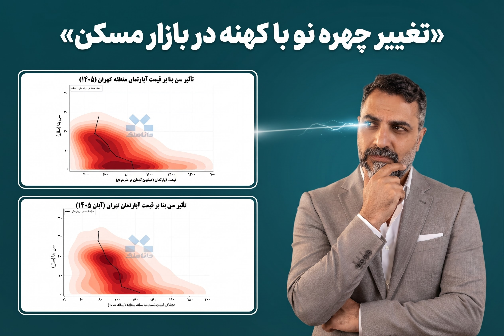
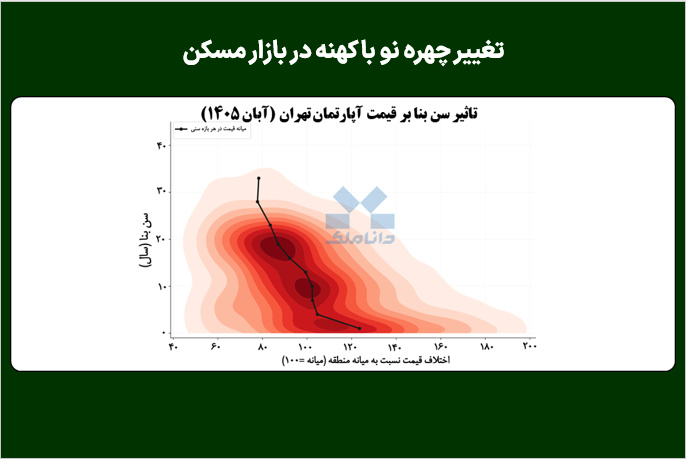
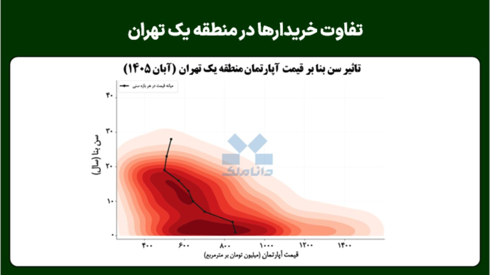

چند سال پیش، واحدهای نوساز تقریباً ۸۰ درصد معاملات مسکن تهران را به خود اختصاص میدادند. هم عرضهی واحد نوساز زیاد بود و هم تقاضا برای خانهی کلیددار در بازار فراوان. اما با کاهش قدرت خرید، مشتریان کمکم به سمت آپارتمانهای قدیمیتر رفتند، تا جایی که امروز بخش بزرگی از معاملات، روی واحدهای چندساله متمرکز شده است. این تغییر، فقط یک جابهجایی سلیقه نیست؛ نشانهی تغییر چهرهی کل بازار است.
سن بنا؛ عاملی که دیگر نادیده گرفته نمیشود
در سالهای پررونق بازار نوساز، آپارتمانهای قدیمیتر بهطور معمول سالانه حدود ۲ درصد افت ارزش یا استهلاک داشتند. به عبارت ساده، اگر یک واحد نوساز ۱۰۰ میلیون تومان در هر متر ارزش داشت، یک واحد ۵ ساله در همان شرایط، حدود ۹۰ میلیون تومان معامله میشد. اما نمودار تحلیلی آبان ۱۴۰۵ نشان میدهد که امروز در تهران، یک آپارتمان ۲۰ ساله، حدود ۳۰ درصد ارزانتر از نوساز مشابه معامله میشود. به بیان دیگر، فشار تقاضا روی واحدهای چندساله، شیب افت قیمت را کم کرده و نرخ استهلاک سالانه از حدود ۲ درصد به حدود ۱.۵ درصد رسیده است.

این نمودار چه میگوید؟
محور افقی، اختلاف قیمت نسبت به میانگین منطقه و محور عمودی، سن بنا است. هرچه نقطهها به سمت بالا و چپ میروند، یعنی بنای قدیمیتر و قیمت پایینتر. هالههای قرمز نشان میدهند تعداد معاملات در هر ترکیب قیمت و سن، چقدر است؛ یعنی بیشترین حجم معاملات کجا متمرکز شده است.
شیب افت قیمت لزوماً خطی نیست
نمودارهای حرارتی نشان میدهند که رابطهی سن بنا و قیمت، یک خط صاف نیست. در بعضی بازههای عمر ساختمان و در بعضی محلهها، افت قیمت شتاب بیشتری دارد و در بعضی جاها تقریباً ثابت میماند. برای همین، فقط با یک عدد میانگین نمیتوان تصمیم خرید گرفت.
منطقه یک تهران؛ الگوی متفاوت
نمودار دوم الگوی افت قیمت را در منطقه یک تهران نشان میدهد. در این منطقه، بطور متوسط یک آپارتمان ۲۰ ساله حدود ۵۹ درصد ارزش یک نوساز مشابه را دارد. یعنی افت سالانهی ارزش در منطقه یک، کمی بیش از ۲ درصد در سال است. اگر قیمت نوساز در این منطقه حدود ۱.۵ میلیارد تومان در هر متر باشد، یک واحد مشابه ۲۰ ساله کمتر از ۹۰۰ میلیون تومان در هر متر معامله میشود. همچنین هالههای نمودار نشان میدهد که حجم زیادی از معاملات منطقه یک در قیمتهای بالای یک میلیارد تومان در هر متر رخ داده است؛ بازاری که در آن، سن بنا و موقعیت، همزمان نقش تعیینکننده دارند.

خریدار چه چیزی را باید بداند؟
- اختلاف نوساز و کهنه را جدی بگیرید: در تهران، واحد ۲۰ ساله میتواند تا ۳۰ درصد ارزانتر از نوساز مشابه باشد؛ اما این تخفیف در همهی محلهها یکسان نیست.
- به محله و سن بنا با هم نگاه کنید: یک ساختمان ۲۰ ساله در محلهی قوی ممکن است ارزش نگهداشته باشد، در حالی که همان سن در محلهی ضعیفتر افت بیشتری دارد.
- فرصت را از الگو تشخیص دهید: تخفیف بزرگ لزوماً نشانهی فرصت نیست؛ گاهی نشانهی ایرادی است که هنوز دیده نشده.
- معاملات واقعی را ملاک قرار دهید: آگهیهای فعال معمولاً بالاتر از قیمت نهاییاند؛ برای داوری، دادهی معامله را بررسی کنید.
جمعبندی
بازار مسکن تهران دیگر فقط بازار نوساز نیست. سن بنا، محله و شرایط خریدار، با هم قیمت را تعیین میکنند. نرخ افت ارزش ساختمانهای قدیمیتر کم شده، اما همچنان تفاوت قابلتوجهی میان نوساز و چندساله وجود دارد. قبل از هر تصمیم، نمودار مربوط به محلهی خودتان را بررسی کنید و با یک مشاور مطمئن مشورت کنید.
منبع دادهها و نمودارها: گزارش «تغییر چهره نو با کهنه در بازار مسکن» (۲۶ آبان ۱۴۰۵) در نمودارنوشت. تحلیل و جمعبندی این مقاله توسط مستر املاکی بازنویسی شده است.